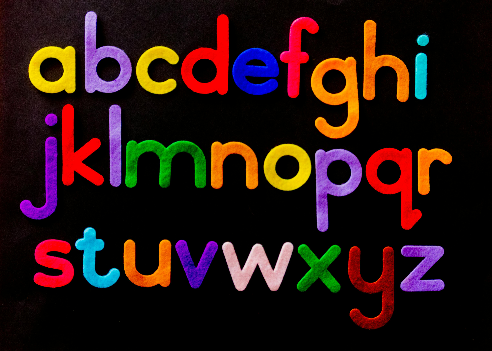
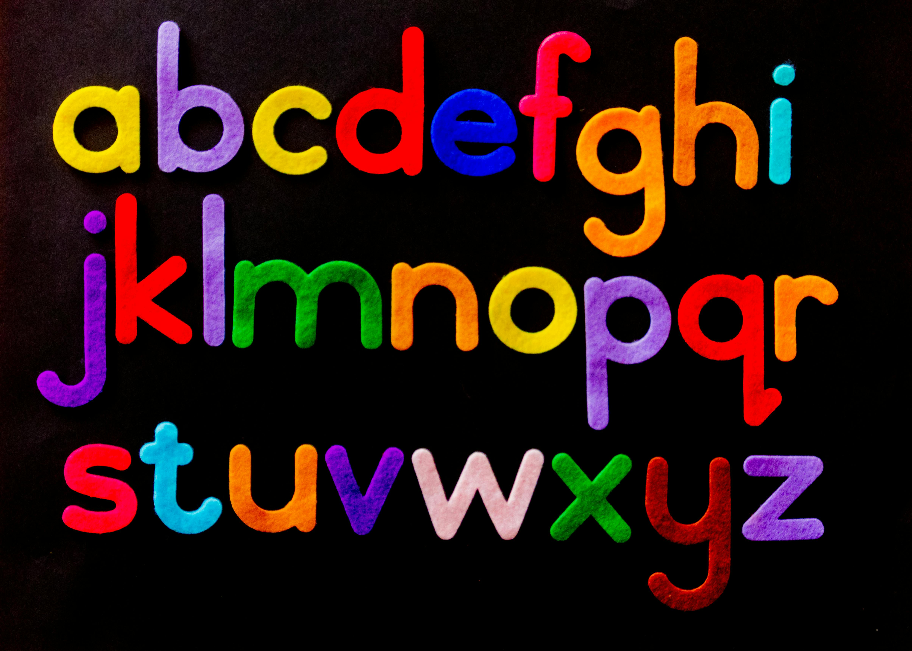

The most powerful changes in life often begin quietly—like choosing kindness over anger, patience over haste, or courage over fear. These little decisions may seem invisible at first, but together they shape the way you experience the world. Trust that even the smallest positive choice you make today can ripple into something far greater tomorrow. Every day is a blank page, waiting for you to write something new on it. Some pages may be messy, others may be beautiful, but together they form the story of your life. Don’t be afraid of mistakes or rough drafts—they’re proof that you are trying, learning, and moving forward. What matters most is that you keep turning the pages. Opportunities don’t always arrive with loud announcements; sometimes they come disguised as small chances, quiet moments, or even challenges. If you stay open-minded and ready, you’ll see that what feels like a problem today could actually be the doorway to something better tomorrow.
Your journey will not always feel smooth, and that’s okay. The moments of struggle are not signs of weakness but proof that you’re growing stronger. Just like a seed pushes through the soil before it sees the sunlight, you too may face resistance before your breakthrough arrives. Sometimes, life teaches us more through silence than through words. The quiet moments—when you pause, breathe, and simply observe—often bring the clearest answers. Trust that you don’t always need to rush; clarity comes when the mind is still enough to listen. Gratitude has a gentle way of shifting your perspective. When you start noticing the little things—a smile, a kind word, the comfort of home—you realize that happiness isn’t something far away; it’s already around you. The more you appreciate, the more life gives you reasons to feel thankful.
 
